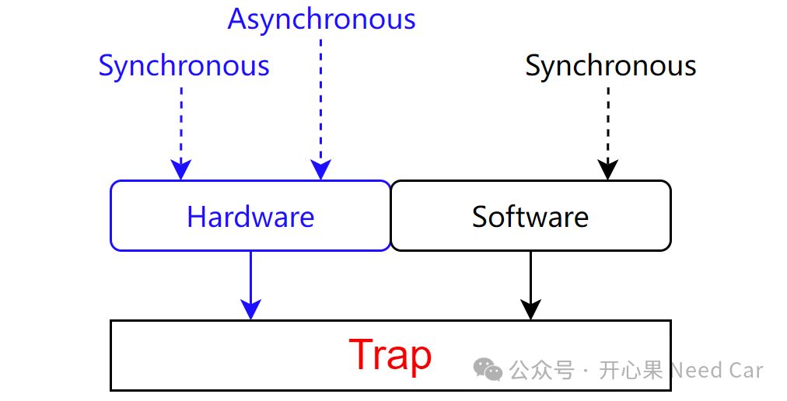
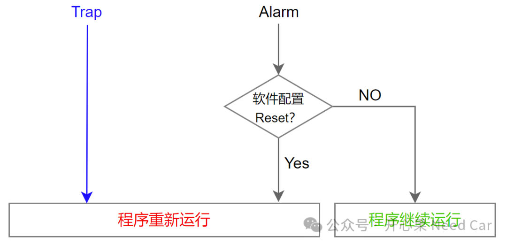
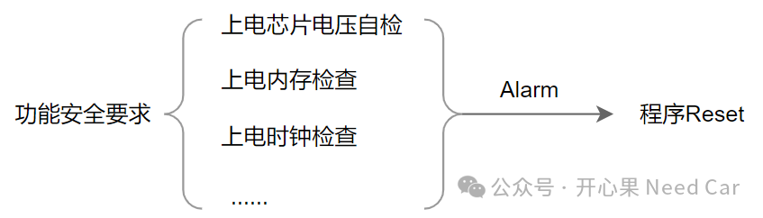

开心果 Need Car · 2024-04-10T08:31:00+08:00 · 微信原文
在汽车嵌入式开发中，"Trap"和"Alarm"这两个名词我们并不陌生。程序如果发生了Trap，一般会复位（Reset）。如果软件程序触发了Alarm，很多时候，程序也会复位，两者是一回事吗？
1、Trap是什么？

提示：软件触发的Trap，多数属于同步触发，暂没接触过软件异步触发Trap。
2、Alarm是什么？
讨论Alarm，很多时候需要结合功能安全讨论。以TC3xx为例，Alarm触发后的行为由SMU（Safety Management Unit）管理。关于Alarm的触发、管理等细节可以参考前文《嵌入式开发：安全架构核心组件之SMU》。
（一）Alarm和Trap触发的Reset区别
对于Trap，一般会直接复位CPU，而且属于强制行为。其实，这属于一种自我保护机制，当CPU不能正常工作时，通过这种复位机制使得程序重新运行。
但是，Alarm触发的Reset是一种"人为"设定行为，即：根据功能安全要求目标，进行对应的安全处理行为。当程序触发Alarm以后，Reset或者不做处理都可以通过软件配置决定。

（二）Alarm与功能安全
Alarm怎么又和功能安全扯到一起了呢？车辆作为载人的交通工具，安全永远是放在第一位的。在功能安全的概念里，"Safety"可以说是一个显眼包，功能安全的话题有些大，本文不做深入讨论。但是，功能安全的落地执行，脱离不开软件的鲁棒性检查和安全冗余设计。
提到鲁棒性检查，我们会联想到电源管理芯片的安全检查、主芯片的安全检查等等，而且这些安全检查依赖驱动层的MCAL。比如：MBIST（Memory Build In Self Test）、芯片时钟检查、芯片电压检查等。当这些检查异常时，可以通过Alarm触发后续的动作，比如：Reset。当然，软件层面，功能安全还会涉及OS、Watchdog、E2E等，本文不做过多讨论。
功能安全与Alarm关系，示意如下：

额外拓展：
往期精彩回顾
Autosar网络管理：Partial Network基础 之 ERA/EIRA、PNC Gateway
VSCode实用技巧：local-history及.gitignore